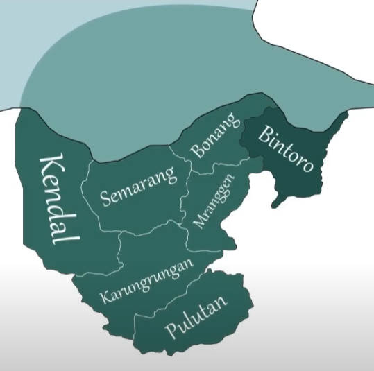
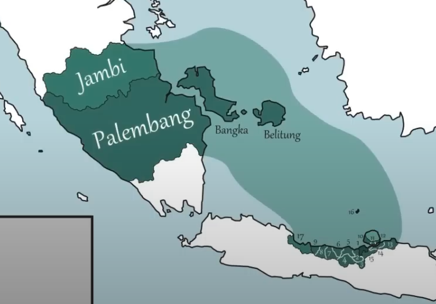

Sejarah Kesultanan Demak
Latar Belakang Sejarah dan Faktor Berdirinya Kesultanan Demak
Kesultanan Demak berdiri pada akhir abad ke-15 di tengah proses transisi besar dalam sejarah Nusantara, yaitu peralihan dari dominasi kerajaan-kerajaan Hindu-Buddha seperti Majapahit menuju kemunculan kerajaan-kerajaan Islam. Setelah mencapai puncak kejayaannya pada abad ke-14, Kerajaan Majapahit mulai mengalami kemunduran tajam akibat konflik internal, perebutan kekuasaan antar elite, dan melemahnya pengaruh pusat terhadap daerah-daerah kekuasaannya. Pada saat bersamaan, agama Islam mulai berkembang di wilayah pesisir utara Jawa, khususnya di kota-kota pelabuhan seperti Gresik, Tuban, Jepara, dan Demak. Penyebaran Islam ini dibawa oleh para pedagang Muslim dari Gujarat (India), Arab, dan Persia. Islam tidak hanya menyebar melalui perdagangan, tetapi juga melalui dakwah yang dilakukan oleh para ulama besar, terutama Wali Songo, sembilan wali yang menjadi pelopor penyebaran Islam di tanah Jawa. Di tengah kondisi politik Majapahit yang melemah, seorang bangsawan berdarah campuran Jawa dan Tionghoa, yaitu Raden Patah, yang diduga merupakan keturunan terakhir raja Majapahit dari seorang selir Tionghoa, mulai membangun kekuatan baru di pesisir utara Jawa. Dengan dukungan para ulama dan masyarakat Muslim setempat, Raden Patah mendirikan Kesultanan Demak sekitar tahun 1475, menjadikannya kerajaan Islam pertama di Pulau Jawa.
Raja Raden Patah:

Kesultanan Demak didirikan oleh Raden Patah pada awal abad ke-16, sekitar tahun 1475–1500 M. Ia dianggap sebagai pendiri sekaligus sultan pertama Kesultanan Demak, yang merupakan kerajaan Islam pertama di pulau Jawa. Raden Patah diyakini merupakan keturunan dari kerajaan Majapahit dan ibunya seorang muslim dari Palembang. Ia belajar Islam di pesantren di Jawa dan merupakan murid dari Sunan Ampel, salah satu dari Wali Songo. Setelah Majapahit mulai runtuh, Raden Patah mendirikan kekuasaan Islam baru di Demak, Jawa Tengah. Kesultanan Demak kemudian menjadi pusat penyebaran Islam di Jawa dan memainkan peran penting dalam menumbangkan sisa-sisa kekuasaan Hindu-Buddha di Nusantara.
Masa Pemerintahan Raden Patah (1475–1518)
Raden Patah merupakan pendiri sekaligus sultan pertama Kesultanan Demak, kerajaan Islam pertama di pulau Jawa. Ia memerintah dengan gelar Sultan Alam Akbar al-Fatah, dan masa kekuasaannya diperkirakan berlangsung dari sekitar tahun 1475 hingga 1518. Raden Patah memiliki latar belakang istimewa: ia diyakini sebagai keturunan dari kerajaan Majapahit, yang ibunya berasal dari Palembang dan telah memeluk Islam. Pendidikan agamanya diperoleh di pesantren-pesantren Jawa, dan ia merupakan murid dari Sunan Ampel, salah satu tokoh Wali Songo yang sangat berpengaruh dalam penyebaran Islam di Nusantara. Di bawah kepemimpinan Raden Patah, Demak mulai tumbuh sebagai pusat kekuasaan Islam baru yang menggantikan peran Majapahit yang sedang mengalami kemunduran. Ia berhasil membangun fondasi politik, agama, dan ekonomi yang kuat bagi Kesultanan Demak, dan membuka jalan bagi kerajaan ini untuk tampil sebagai kekuatan utama di tanah Jawa.
Beberapa pencapaian penting pada masa pemerintahannya antara lain:
1. Mendirikan Masjid Agung Demak:
Salah satu pencapaian monumental Raden Patah adalah pembangunan Masjid Agung Demak, yang didirikan sekitar akhir abad ke-15. Masjid ini bukan hanya menjadi tempat ibadah, tetapi juga berfungsi sebagai pusat kegiatan dakwah, pendidikan, dan pemerintahan. Masjid ini diyakini dibangun dengan bantuan para Wali Songo, khususnya Sunan Kalijaga, yang terkenal dengan pendekatan dakwah kulturalnya. Masjid Agung Demak menjadi simbol penting kebesaran Islam di tanah Jawa dan hingga kini tetap menjadi salah satu situs bersejarah utama di Indonesia.
2. Membangun Aliansi Politik dan Militer:
Raden Patah sangat cermat dalam membangun jaringan kekuasaan. Ia berhasil menggalang dukungan dari para adipati atau penguasa lokal di pesisir utara Jawa, seperti Gresik, Tuban, dan Jepara. Dengan menjalin aliansi strategis ini, Demak memperoleh dukungan militer dan politik yang memperkuat posisinya sebagai kerajaan baru yang mampu mengisi kekosongan kekuasaan setelah melemahnya Majapahit. Hubungan dengan para adipati ini juga memperkuat legitimasi Raden Patah sebagai pemimpin Islam yang sah dan diterima luas oleh masyarakat Jawa.
3. Mengembangkan Demak sebagai Pusat Perdagangan:
Kesultanan Demak terletak di lokasi strategis di pesisir utara Jawa, yang memungkinkan kerajaan ini berkembang menjadi pusat perdagangan yang penting. Di masa Raden Patah, pelabuhan Demak dikembangkan untuk melayani perdagangan dengan kawasan-kawasan penting seperti Malaka, Gujarat di India, dan wilayah Timur Tengah. Hubungan dagang ini tidak hanya membawa kemakmuran ekonomi bagi kerajaan, tetapi juga mempercepat penyebaran budaya dan ajaran Islam di kalangan masyarakat pesisir.
4. Mewakili Transisi dari Hindu-Buddha ke Islam:
Pada masa pemerintahan Raden Patah mencerminkan transformasi besar dalam sejarah Jawa, yakni peralihan dari dominasi kerajaan-kerajaan bercorak Hindu-Buddha seperti Majapahit menuju era kerajaan-kerajaan Islam. Meskipun belum melakukan ekspansi militer besar-besaran, Raden Patah berhasil menjadikan Demak sebagai kekuatan yang diperhitungkan. Ia memimpin dengan pendekatan diplomatik dan religius yang kuat, menjadikan Islam sebagai kekuatan pemersatu yang baru.
Masa Transisi dan Konsolidasi (1518–1521)

Setelah wafatnya Raden Patah sekitar tahun 1518, Kesultanan Demak memasuki masa transisi yang penting dan cukup sensitif. Pewarisan kekuasaan jatuh kepada putra Raden Patah, Pangeran Sabrang Lor, yang kelak dikenal dengan gelar Sultan Trenggana. Namun, masa antara wafatnya Raden Patah hingga penobatan Trenggana sebagai sultan secara resmi pada tahun 1521 bukanlah masa yang langsung mulus. Terdapat proses konsolidasi kekuasaan yang cukup dinamis, baik secara internal di lingkungan istana maupun di kalangan para adipati yang merupakan kekuatan politik penting dalam struktur kekuasaan Demak.
Siapa itu Pangeran Sabrang Lor?

Pangeran Sabrang Lor memperoleh julukannya karena keberaniannya menyeberangi Laut Jawa (ke "lor", atau utara) dalam ekspedisi militernya ke wilayah luar Jawa, termasuk ke Malaka. Sebelum naik takhta secara resmi, ia telah dikenal sebagai pemimpin muda yang berani, berwawasan luas, dan memiliki ambisi besar untuk memperkuat serta memperluas kekuasaan Islam di tanah Jawa.
Karakteristik Masa Transisi (1518–1521):
1. Konsolidasi Internal dan Peneguhan Legitimasi:
Selama tiga tahun ini, Pangeran Sabrang Lor fokus memperkuat kedudukannya di kalangan bangsawan dan para pemimpin lokal. Meskipun ia merupakan anak dari pendiri Kesultanan Demak, pengangkatan sultan tidak hanya bersifat turun-temurun, tetapi juga membutuhkan dukungan politik dari para pemuka agama (ulama), Wali Songo, dan para adipati. Trenggana dengan cermat menjalin hubungan strategis dengan kelompok-kelompok tersebut untuk memastikan bahwa tidak ada perpecahan internal dalam tubuh kerajaan.
2. Stabilitas Politik dan Integrasi Wilayah:
Trenggana juga memanfaatkan masa ini untuk menjaga stabilitas politik, terutama di wilayah-wilayah pesisir utara Jawa yang sebelumnya telah setia pada Raden Patah. Ia mengunjungi beberapa wilayah kekuasaan seperti Tuban, Gresik, dan Jepara guna memastikan loyalitas para penguasa lokal. Dengan diplomasi yang kuat, ia berhasil mempertahankan integritas Kesultanan Demak dari potensi perpecahan atau perebutan kekuasaan.
3. Persiapan Reformasi Militer dan Ekspansi:
Meskipun belum melakukan ekspansi besar-besaran pada masa ini, Trenggana mulai membentuk kerangka militer yang lebih terorganisasi, sebagai persiapan untuk ekspansi ke wilayah-wilayah pedalaman yang masih dikuasai oleh kerajaan-kerajaan Hindu-Buddha seperti Pajajaran dan Blambangan. Masa ini menjadi landasan penting bagi pembangunan kekuatan militer Demak yang kelak digunakan secara besar-besaran di masa pemerintahan Trenggana sebagai sultan.
4. Peran Ulama dan Wali Songo:
Selama masa transisi, dukungan dari para ulama dan tokoh-tokoh Wali Songo tetap menjadi faktor kunci dalam menjaga arah keislaman kerajaan. Figur-figur seperti Sunan Kalijaga dan Sunan Kudus diyakini terus memberikan arahan spiritual dan nasihat politik kepada Trenggana, sehingga transisi kekuasaan dapat berlangsung secara damai dan penuh legitimasi keagamaan.
Masa Keemasan di Bawah Sultan Trenggana (1521–1546)

Masa pemerintahan Sultan Trenggana (1521–1546) dianggap sebagai puncak kejayaan Kesultanan Demak. Di bawah kepemimpinannya, Demak bertransformasi dari sekadar kerajaan pesisir menjadi kekuatan utama yang mendominasi politik, militer, dan agama di Pulau Jawa. Trenggana adalah pemimpin yang cakap dan visioner, menggabungkan kekuatan militer, strategi diplomasi, dan dakwah Islam sebagai pilar utama ekspansi dan stabilitas wilayah kekuasaannya.
Masa Sultan Trenggana

1. Ekspansi Wilayah dan Militer:
Sultan Trenggana sangat aktif dalam memperluas wilayah kekuasaan Demak. Ia melanjutkan misi ayahandanya, Raden Patah, namun dengan pendekatan yang lebih agresif dan terstruktur. Strategi ekspansi ini bertujuan untuk menyatukan wilayah Jawa di bawah panji Islam dan menggantikan kerajaan-kerajaan Hindu-Buddha yang tersisa.
2. Penaklukan Sunda Kelapa (Jakarta) dan Banten – 1527:
Salah satu pencapaian militer paling monumental terjadi pada tahun 1527, ketika pasukan Demak yang dipimpin oleh Fatahillah (menantu Sunan Gunung Jati), dengan dukungan langsung dari Trenggana dan kerja sama ulama, merebut Sunda Kelapa dari tangan Kerajaan Sunda Pajajaran. Saat itu, Pajajaran tengah bersekutu dengan Portugis yang berencana mendirikan benteng dagang di wilayah tersebut. Penaklukan Sunda Kelapa bukan hanya kemenangan strategis militer, tetapi juga simbolis—mengakhiri dominasi kekuasaan Hindu di Jawa Barat dan menggagalkan infiltrasi Portugis ke jantung perdagangan Jawa. Setelah direbut, kota itu diganti namanya menjadi Jayakarta, yang berarti "kemenangan yang sempurna", sebagai penegasan atas kemenangan Islam atas kekuatan asing dan lokal non-Islam. Demak juga menancapkan pengaruh kuat di Banten, yang kemudian berkembang menjadi kerajaan Islam besar dan pelabuhan penting di barat Nusantara.
3. Penaklukan Jawa Tengah dan Timur:
Trenggana juga memimpin ekspedisi militer ke berbagai wilayah Jawa Tengah dan Jawa Timur, termasuk menaklukkan kota-kota besar seperti Surabaya, Kediri, dan Pasuruan. Penaklukan ini bertujuan untuk meruntuhkan sisa-sisa kekuasaan kerajaan Majapahit dan mewujudkan unifikasi Jawa di bawah kendali Islam. Melalui serangkaian kampanye militer yang berhasil, Demak menjadi satu-satunya kerajaan besar di Jawa yang mampu menandingi dan akhirnya menggantikan warisan Majapahit.
4. Ekspansi ke Luar Jawa:
Pengaruh Demak di masa Sultan Trenggana juga meluas ke luar Jawa:
- Pesisir Kalimantan: menjalin hubungan dengan komunitas dagang dan muslim di wilayah pesisir.
- Pulau Madura: menjadi wilayah penting dalam jaringan logistik dan militer Demak.
- Sebagian Sulawesi: hubungan dagang dan dakwah diperkuat melalui para saudagar dan ulama.
5. Penyebaran Islam dan Peran Sosial-Religius
Selain sebagai pemimpin militer, Sultan Trenggana juga dikenal sebagai pelindung dan penyokong dakwah Islam. Ia memanfaatkan keberadaan para Wali Songo untuk menyebarkan ajaran Islam secara luas dan damai di tengah masyarakat Jawa yang masih kuat dengan budaya dan tradisi lokal seperti:
- Ia memperkuat peran ulama, kiai, dan pesantren dalam sistem sosial kerajaan, menjadikannya bagian dari struktur pemerintahan.
- Islam yang disebarkan adalah Islam yang inklusif dan adaptif, memadukan nilai-nilai keislaman dengan unsur budaya lokal seperti wayang, gamelan, dan tradisi lisan.
- Hubungan erat dengan Sunan Kalijaga, Sunan Kudus, dan Sunan Gunung Jati memperkuat legitimasi spiritual pemerintahannya.
6. Perlawanan terhadap Portugis
Sultan Trenggana secara aktif menentang kehadiran Portugis di kawasan Asia Tenggara, khususnya di Malaka, yang sejak tahun 1511 telah dikuasai oleh bangsa Eropa tersebut. Bagi Trenggana, keberadaan Portugis bukan hanya ancaman ekonomi (menguasai jalur rempah-rempah), tetapi juga ancaman religius dan ideologis karena membawa misi Kristen dan dominasi asing.
Demak beberapa kali mengirimkan armada laut untuk menyerang Malaka, meskipun upaya ini belum berhasil. Salah satu kegagalan utama disebabkan oleh:
- Keterbatasan teknologi dan jumlah armada laut Demak.
- Kekuatan pertahanan Portugis yang sangat terorganisir dan dipersenjatai dengan artileri canggih.
Meskipun tidak berhasil merebut Malaka, perlawanan ini menunjukkan bahwa Demak adalah kekuatan yang berani menantang imperialisme asing demi melindungi kedaulatan perdagangan dan penyebaran Islam di Nusantara.
Akhir Pemerintahan dan Warisan
Sultan Trenggana wafat pada tahun 1546, saat memimpin ekspedisi militer ke wilayah Panarukan di Jawa Timur. Wafatnya menandai berakhirnya masa keemasan Kesultanan Demak. Namun, warisan politik, militer, dan keagamaannya terus dikenang sebagai fondasi penting penyebaran Islam dan pembentukan identitas Islam Jawa.
Wafatnya Sultan Trenggana dan Awal Kemunduran (1546)

Krisis Kepemimpinan dan Konflik Suksesi (1546–1549)
Pada tahun 1546, Kesultanan Demak mengalami titik balik penting ketika Sultan Trenggana gugur dalam sebuah ekspedisi militer di Panarukan, wilayah di Jawa Timur. Saat itu, Trenggana tengah memimpin langsung penaklukan atas kerajaan-kerajaan kecil sisa kekuasaan Hindu-Buddha, terutama wilayah yang masih menunjukkan loyalitas terhadap peninggalan Majapahit. Gugurnya Sultan Trenggana tidak hanya mengakhiri masa kejayaan Kesultanan Demak, tetapi juga memicu krisis politik besar yang mengguncang kestabilan internal kerajaan.
Konflik Suksesi: Pertarungan antara Arya Penangsang dan Jaka Tingkir
Wafatnya Trenggana meninggalkan kekosongan kekuasaan yang segera memunculkan perebutan tahta antara dua tokoh kuat yang memiliki garis keturunan dan pengaruh politik yang signifikan
Arya Penangsang

Arya Penangsang adalah putra dari Pangeran Sekar, yang merupakan adik kandung Sultan Trenggana. Oleh karena itu, ia memiliki klaim darah terhadap tahta Demak. Namun, ayah Arya Penangsang, Pangeran Sekar, sebelumnya dibunuh karena dianggap sebagai ancaman politik oleh pihak dalam istana. Sebagai pewaris langsung Pangeran Sekar, Arya Penangsang merasa berhak atas singgasana Demak. Setelah kematian Trenggana, ia berhasil menguasai pemerintahan secara de facto dan menyatakan diri sebagai penguasa sah Kesultanan Demak. Namun demikian, pemerintahan Arya Penangsang tidak mendapat dukungan luas. Ia dikenal sebagai pemimpin yang keras, otoriter, dan kurang mampu membangun konsensus politik dengan para adipati dan bangsawan pesisir. Banyak kalangan istana dan ulama menilai gaya kepemimpinannya bertentangan dengan tradisi Islam dan etika pemerintahan yang diwariskan oleh Trenggana.
Jaka Tingkir (Hadiwijaya)
Di sisi lain, muncul tokoh muda yang penuh kharisma: Jaka Tingkir, nama kecil dari Hadiwijaya, menantu Sultan Trenggana dan adipati Pajang. Ia memiliki latar belakang kuat secara politik dan religius:
- Dididik oleh para ulama besar, termasuk Sunan Kalijaga.
- Membangun dukungan luas dari kalangan pesantren dan bangsawan pesisir.
- Memiliki hubungan darah dan politik dengan keluarga kerajaan melalui pernikahan.
Jaka Tingkir menjadi simbol perlawanan terhadap kepemimpinan keras Arya Penangsang dan menggalang aliansi kuat dengan adipati-adipati berpengaruh seperti:
- Adipati Jepara (termasuk Ratu Kalinyamat, istri Pangeran Hadirin)
- Adipati Kudus
- Adipati Pajang (yang ia pimpin sendiri)
Koalisi ini bersatu untuk menggulingkan Arya Penangsang dan menyelamatkan Kesultanan Demak dari keterpurukan akibat konflik internal.
Puncak Konflik: Terbunuhnya Arya Penangsang (1549)
Konflik antara dua kekuatan ini mencapai klimaks pada tahun 1549, ketika pertempuran penentu terjadi. Dalam peristiwa ini, Arya Penangsang dibunuh oleh Raden Sutawijaya (anak angkat Jaka Tingkir, yang kelak mendirikan Mataram Islam), dalam duel yang legendaris. Kematian Arya Penangsang menandai berakhirnya kekuasaan langsung Kesultanan Demak. Pusat pemerintahan kemudian berpindah ke Pajang, di bawah kendali Jaka Tingkir yang memproklamirkan dirinya sebagai penguasa baru dengan gelar Sultan Hadiwijaya.
Dampak dan Akhir Era Demak
Dengan wafatnya Trenggana dan tewasnya Arya Penangsang, maka berakhirlah masa kejayaan Kesultanan Demak sebagai kerajaan Islam pesisir. Perpindahan pusat kekuasaan ke Pajang menandai babak baru dalam sejarah Islam Jawa: dari kerajaan maritim ke kerajaan agraris di pedalaman.
Meskipun singgasana Demak tidak lagi berdiri secara politik, warisan Trenggana dan para wali tetap hidup dalam budaya dan struktur sosial masyarakat Jawa, termasuk:
- Tradisi pesantren dan dakwah
- Islam yang inklusif dan akulturatif
- Jejak sejarah yang kuat di situs-situs seperti Masjid Agung Demak dan kompleks makam para sultan
Kejatuhan Kesultanan Demak dan Berdirinya Kesultanan Pajang (1554)

Kesultanan Demak, yang selama hampir delapan dekade menjadi pelopor kerajaan Islam pertama di Jawa, akhirnya mencapai titik kejatuhan pada pertengahan abad ke-16. Rangkaian konflik internal, perebutan kekuasaan, dan ketegangan antar bangsawan mempercepat keruntuhan struktur politik yang dibangun sejak masa Raden Patah dan mencapai puncaknya di era Sultan Trenggana.
Puncak Konflik: Tewasnya Arya Penangsang
Setelah wafatnya Sultan Trenggana pada tahun 1546, konflik suksesi memuncak dalam pertarungan antara dua tokoh kuat: Arya Penangsang dan Jaka Tingkir (Hadiwijaya). Pada tahun 1554, konflik ini mencapai klimaks dalam pertempuran berdarah yang menentukan masa depan Demak.
Dalam versi tradisional yang dikisahkan dalam babad dan tradisi lisan, pertempuran tersebut mempertemukan Arya Penangsang, yang dikenal tangguh dan tak kenal takut, melawan pasukan yang dipimpin oleh dua adipati setia Jaka Tingkir, yaitu:
- Ki Penjawi
- Adipati Jipang
- Raden Pemanahan (tokoh muda dari Mataram yang kelak menjadi ayah dari Panembahan Senopati)
Menurut cerita rakyat yang terkenal, Arya Penangsang bahkan tetap bertarung dalam kondisi terluka parah dan usus terburai, namun akhirnya berhasil ditaklukkan dan tewas dalam pertempuran. Kematian Arya Penangsang menandai berakhirnya kekuasaan dinasti Raden Patah, pendiri Kesultanan Demak, dan sekaligus mengakhiri riwayat politik kerajaan Demak sebagai pusat kekuasaan Islam di Jawa.
Pemindahan Pusat Kekuasaan ke Pajang
Setelah konflik usai dan musuh politiknya tersingkir, Jaka Tingkir memindahkan pusat pemerintahan dari Demak ke Pajang, sebuah daerah di pedalaman Jawa Tengah, tidak jauh dari wilayah yang kini dikenal sebagai Surakarta (Solo). Langkah ini diambil karena beberapa alasan strategis:
- Pajang memiliki posisi geografis yang lebih terlindung dari ancaman laut, terutama dari kekuatan asing seperti Portugis.
- Wilayah pedalaman menawarkan basis pertanian yang kuat, mendukung ketahanan ekonomi kerajaan.
- Jaka Tingkir ingin membentuk identitas baru yang tidak terikat langsung dengan konflik warisan Dinasti Demak, sekaligus memperluas pengaruh Islam ke daerah agraris yang sebelumnya tidak tersentuh secara mendalam oleh kerajaan maritim.
Di Pajang, Jaka Tingkir mendirikan Kesultanan Pajang dan menyatakan dirinya sebagai Sultan Hadiwijaya. Meskipun secara simbolis ia merupakan penerus Demak, secara politik, Kesultanan Pajang adalah entitas baru yang menandai fase baru dalam sejarah Islam Jawa: dari kerajaan pesisir berbasis perdagangan menjadi kerajaan pedalaman berbasis agraris dan kekuasaan birokratik.
Akhir Era Demak dan Warisannya
Dengan berdirinya Pajang pada tahun 1554, maka Kesultanan Demak secara resmi dinyatakan berakhir. Setelah hampir 80 tahun berdiri sejak didirikan oleh Raden Patah pada akhir abad ke-15, Demak telah:
- Menjadi kerajaan Islam pertama di Jawa dan pionir Islamisasi di Nusantara
- Menumbangkan sisa-sisa kekuasaan Hindu-Buddha, terutama peninggalan Majapahit
- Melawan ekspansi Portugis, meski tidak sepenuhnya berhasil secara militer
- Membangun infrastruktur dakwah dan budaya Islam, melalui jaringan ulama, pesantren, dan masjid
Meski kekuasaan politiknya berakhir, warisan Demak tetap hidup:
- Masjid Agung Demak masih berdiri sebagai simbol kejayaan Islam awal di Jawa
- Silsilah spiritual dan kultural kerajaan ini diteruskan oleh kerajaan-kerajaan penerus seperti Pajang dan kemudian Mataram Islam
- Tradisi Wali Songo dan bentuk Islam kultural Jawa tetap mengakar dalam kehidupan masyarakat hingga hari ini